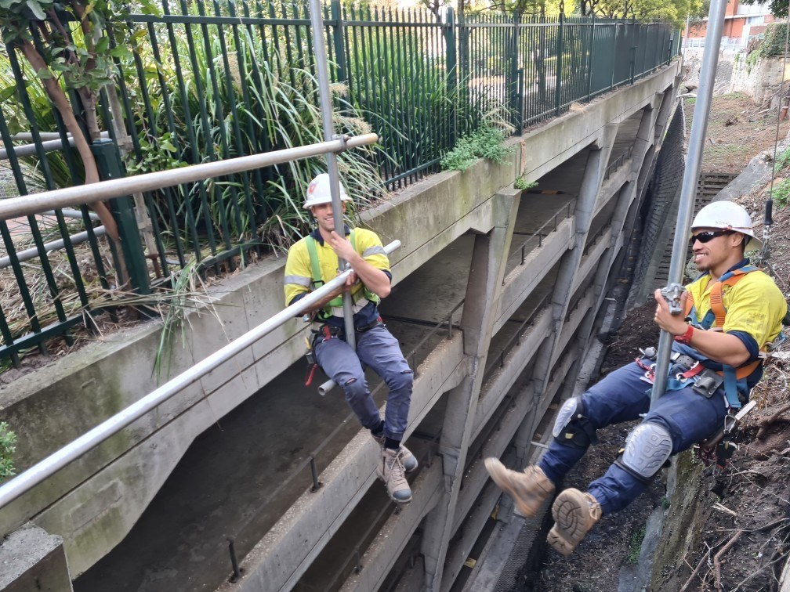

About Me
I was raised by my grandparents growing up in a small town in Ontario, Canada. As long as I can remember all I wanted to do was join the army. By the time I was old enough to join the army I had moved out to western Canada to live with my father. The week after I graduated high school I was sent off to do my training and begin my military career.
After years of training and domestic operations I was given an opportunity to go to Australia and train with an Australian regiment. Shortly after ariving in Sydney I met my future wife and from then on the plans of staying permanently started to form. I began working in construction as a scaffolder a career i really didnt plan on falling into,in this time we got married and had two dogs! and after eight years it is time I move on to a career that is better for me mentaly and physically.
I have always felt in myself a need to serve the community and perform a duty. The Army is behind me now and plans for a family are the new focus, A career in cyber security is my goal in achieving both of these things.
